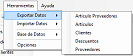
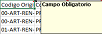

|
Exportación
|
Anterior Inicio Siguiente |
1. Dentro de la pantalla principal debemos seleccionardentro de la
barra de herramientas.
2. Elegimos el modelo de datos que deseamos exportar de la base de datos.
3. Se abrirá la aplicación Excel donde se irán completando de manera automática los
datos de la exportación solicitada. Además, se indicaran como comentarios sobre las
columnas
aquellos datos obligatorios para una futura importación de los datos.